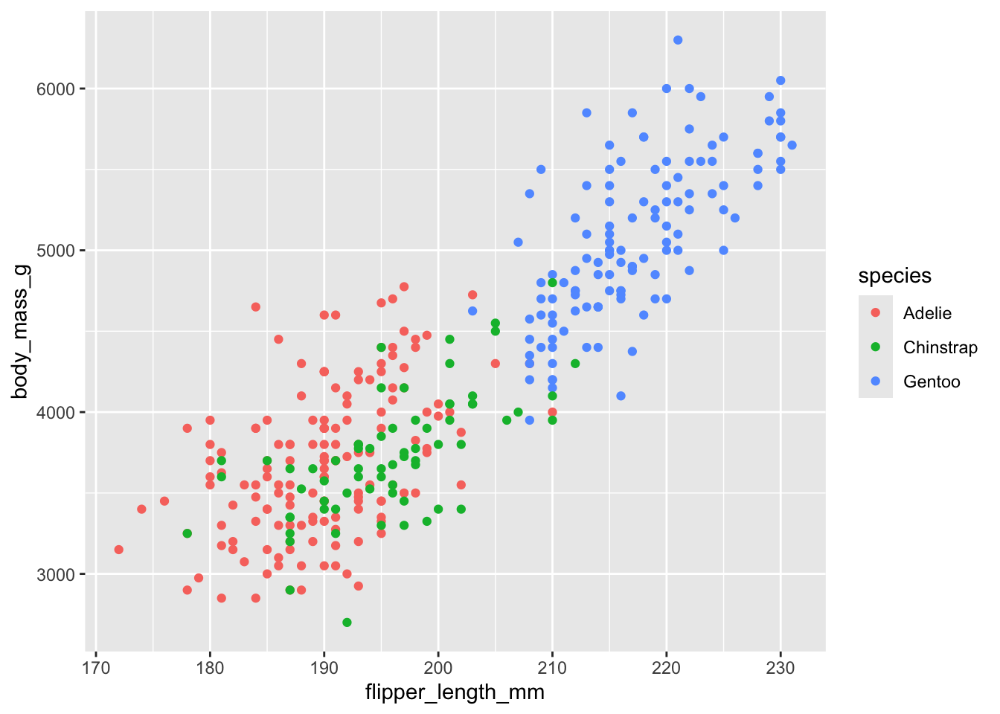
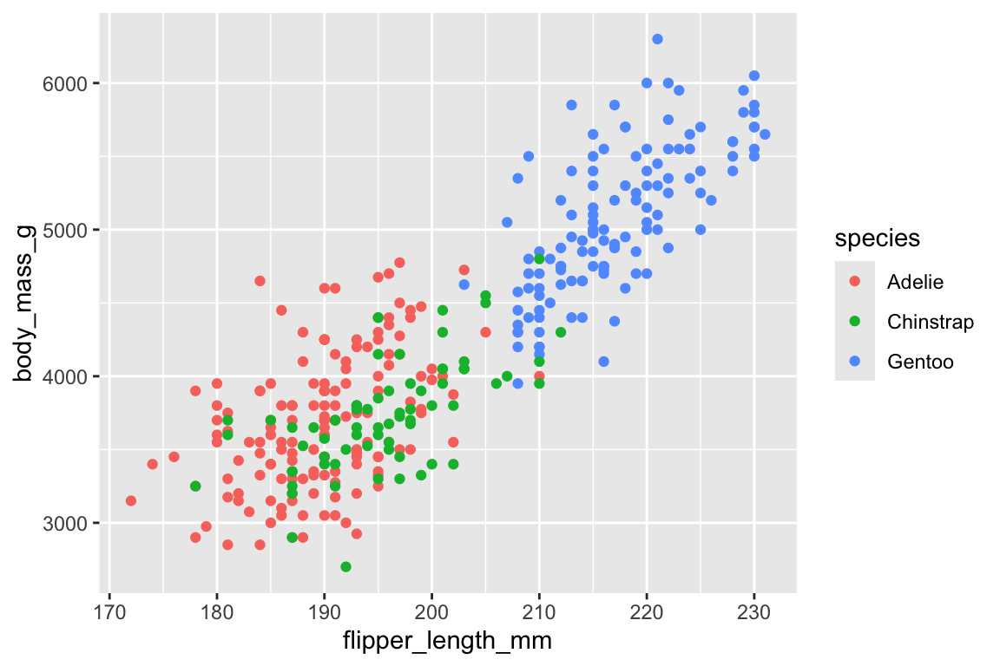

library(palmerpenguins)
library(dplyr)
library(ggplot2)7 Quarto and R
When you include R code cells in your document, Quarto uses the knitr engine to execute them. The basics of code cells, including syntax and common options like echo and include, are covered in Chapter 4. This chapter covers the features specific to R and knitr.
The chapter starts by walking through what you get when you add a code cell that returns each of the most common kinds of results, and the options you’re most likely to reach for with each:
- A single value, in Section 7.1
- A data frame, in Section 7.2
- A plot, in Section 7.3
You’ll then see how parameters let one document produce many variations of a report (Section 7.4). The rest of the chapter, starting with Section 7.5, covers the details of controlling R code cells.
The examples in this chapter use three R packages, so let’s load them first:
When you render, Quarto runs this code in a fresh R session, not in your R Console, so the packages need to be installed in the R installation Quarto uses.
TipPackage not found when rendering?
If Quarto reports that a package isn’t available even though it loads fine in your R Console, Quarto is probably running a different R installation or library path. See Section 7.12 for how to diagnose and fix this.
If you render from RStudio or Positron, Quarto usually uses the same R installation as your R Console, so packages you can load interactively are also available when you render. Positron can discover multiple R installations and lets you switch between them; it sets the QUARTO_R environment variable to the R version active in your session. If you switch interpreters, restart any open Terminals so that they pick up the new value of QUARTO_R before you render from the command line.
7.1 A single value
Start with a code cell that computes a single number: the average body mass of the penguins in the palmerpenguins package. Quarto shows the code followed by its result, as it would appear in the R Console:
```{r}
mean(penguins$body_mass_g, na.rm = TRUE)
```[1] 4201.754The [1] is R’s index for the first element of the result.
Output like this is fine for showing your work, but if a number belongs in a sentence, you don’t want to copy it out of the output by hand. Instead, save the result in a code cell and insert it into your text with inline code (Section 4.3.1):
```{r}
avg_mass <- mean(penguins$body_mass_g, na.rm = TRUE)
```The average penguin weighs `{r} round(avg_mass)` grams.This renders as: The average penguin weighs 4202 grams.
Because the value is computed every time you render, the sentence stays correct when the data change.
Sometimes you want R to write more than a single value into your text, for example a bulleted list with one item per species. Print the markdown with cat() and set output: asis, so that Quarto treats the result as markdown rather than code output:
```{r}
#| output: asis
counts <- table(penguins$species)
cat(paste0("- ", names(counts), ": ", counts, " penguins\n"), sep = "")
```- Adelie: 152 penguins
- Chinstrap: 68 penguins
- Gentoo: 124 penguins
Section 7.10 covers this technique in more detail, including generating whole sections in a loop.
7.2 A data frame
Data frames are the most common result in a data analysis. By default, a data frame also prints as it would in the R Console:
```{r}
penguins
```# A tibble: 344 × 8
species island bill_length_mm bill_depth_mm flipper_length_mm body_mass_g
<fct> <fct> <dbl> <dbl> <int> <int>
1 Adelie Torgersen 39.1 18.7 181 3750
2 Adelie Torgersen 39.5 17.4 186 3800
3 Adelie Torgersen 40.3 18 195 3250
4 Adelie Torgersen NA NA NA NA
5 Adelie Torgersen 36.7 19.3 193 3450
6 Adelie Torgersen 39.3 20.6 190 3650
7 Adelie Torgersen 38.9 17.8 181 3625
8 Adelie Torgersen 39.2 19.6 195 4675
9 Adelie Torgersen 34.1 18.1 193 3475
10 Adelie Torgersen 42 20.2 190 4250
# ℹ 334 more rows
# ℹ 2 more variables: sex <fct>, year <int>Because penguins is a tibble, you see its first ten rows as plain text. That works in any output format, but in an HTML document you can do better. The df-print option in your document header changes how every data frame in the document prints, without changing your code:
---
format:
html:
df-print: paged
---With paged, the same code cell produces a table readers can page through:
Section 7.6 describes the other values df-print accepts.
When a table is part of what you’re reporting, rather than a quick look at the data, you will want to build it explicitly. knitr::kable() turns a data frame into a markdown table that works in every output format:
```{r}
species_mass <- penguins |>
group_by(species) |>
summarize(body_mass_g = mean(body_mass_g, na.rm = TRUE))
knitr::kable(species_mass, digits = 0)
```| species | body_mass_g |
|---|---|
| Adelie | 3701 |
| Chinstrap | 3733 |
| Gentoo | 5076 |
Adding the label and tbl-cap options turns the result into a numbered table with a caption that you can cross-reference (Section 12.7.4). For more control over styling, table packages such as gt work the same way: the code cell returns a table, and Quarto includes it in your document.
If you want readers to be able to search and sort the data themselves, you can use an interactive table widget such as DT::datatable(penguins). Widgets only work in HTML output; Section 7.9 covers them, along with what to do when you also render to PDF or Word.
7.3 A plot
A code cell that creates a plot includes it in your document as an image:
```{r}
ggplot(penguins, aes(x = flipper_length_mm, y = body_mass_g, color = species)) +
geom_point()
```Warning: Removed 2 rows containing missing values or values outside the scale range
(`geom_point()`).
Two things stand out. First, ggplot2 warns about the two penguins with missing measurements. That warning is useful while you work, but you probably don’t want it in your final report. Second, the plot has no caption, and readers who can’t see it get no description of it. Code cell options take care of both:
```{r}
#| label: fig-mass-flipper
#| fig-cap: Penguins with longer flippers tend to be heavier.
#| fig-alt: Scatterplot of body mass against flipper length for Adelie, Chinstrap, and Gentoo penguins, showing that penguins with longer flippers tend to be heavier.
#| fig-width: 6
#| fig-height: 4
#| warning: false
ggplot(penguins, aes(x = flipper_length_mm, y = body_mass_g, color = species)) +
geom_point()
```
The fig- prefix on the label makes the plot a numbered figure you can cross-reference with @fig-mass-flipper (Section 12.8.2). fig-alt adds alternative text, fig-width and fig-height set the size of the plot in inches, and warning: false hides the warning. You can also set fig-width, fig-height, and warning for every cell in the document (Section 7.5).
How a plot looks also depends on the graphics device knitr uses to save it. The defaults work well, but if the text in your plots looks blurry or you want vector output, see Section 7.7. For plots readers can hover over and zoom into, pass a ggplot to plotly::ggplotly() (Section 7.9).
7.4 Parameters
Every example so far has summarized all the penguins at once. Suppose you want the same report for each species instead: the same table, plot, and sentences, but for Adelie, Chinstrap, and Gentoo penguins separately. You could make three copies of the document and edit each one, but then every later change has to be made three times. Parameters let you write the document once and choose which variation to produce when you render it.
You can define parameters in your YAML header using the params key, giving each one a default value:
---
title: Penguin Report
params:
species: Adelie
year: 2008
show_details: true
---Parameters can be accessed in code through the params list and used in code cells and inline code:
penguins |>
filter(species == params$species, year == params$year)This report covers `{r} params$species` penguins observed in `{r} params$year`.Logical parameters like show_details are handy for turning parts of a report on or off. Use !expr to set a cell option to the value of an R expression, here so that the cell runs only when show_details is true:
```{r}
#| echo: false
#| eval: !expr params$show_details
penguins |>
filter(species == params$species) |>
summary()
```It is also possible to override parameters declared in the YAML header from the command line using the -P flag:
quarto render report.qmd -P species:Gentoo -P year:2009For multiple parameter sets, you can create a YAML file with the values:
params-gentoo.yml
species: Gentoo
year: 2009
show_details: falseThen reference it when rendering:
quarto render report.qmd --execute-params params-gentoo.ymlYou can also set parameters when rendering from R with the execute_params argument to quarto_render(), covered in Section 7.11.1.
ImportantParameter values must be valid YAML
However you set them, parameters reach your document through YAML serialization. Every value must therefore be something YAML can represent: strings, numbers, booleans, and lists or nested maps of those. You cannot pass R objects as parameters—a data frame, a fitted model, or a function will not survive the trip.
When a parameter needs to stand in for a complex object, pass a value that identifies it instead: a file path, a database query, or an ID that the document uses to load the object itself.
You’ve now seen the most common things R code cells produce: values you can weave into your text, data frames and tables, plots, and reports that vary with parameters. In each case, the defaults give you a working document, and a few options get you closer to what you want. The rest of this chapter collects the details behind those options, from execution options and graphics devices to rendering and the R environment Quarto runs in.
7.5 Execution
Chapter 4 introduced cell-level options like echo and include. Many of these options can also be set at the document level to apply to all code cells.
7.5.1 Document-level execution options
Set execution options that apply to all cells in your document header:
---
title: My Report
echo: false
warning: false
---Common document-level execution options include the following, which take true or false unless noted otherwise:
eval: Whether to execute code cellsecho: Whether to display source codeoutput: Whether to include results (can also be set toasis)warning: Whether to include warningserror: Whether to include errors (without halting)include: Whether to include any output at all
Additionally, fig-width and fig-height can be set at the document level to define default figure dimensions in inches.
Furthermore, the knitr engine has additional options that you can set at the document level using the knitr key. These map directly to knitr’s chunk options:
---
title: My Document
knitr:
opts_chunk:
collapse: true
comment: "#>"
R.options:
knitr.graphics.auto_pdf: true
---R.options temporarily sets R options via options() before each code cell executes. The original values are restored afterward.
7.5.2 Cell-level execution options
Individual code cells can override document-level settings. The knitr engine supports a large set of cell-level options.
- Some options control code appearance:
code-fold: Collapse code into an expandable sectioncode-summary: Text shown for collapsed code (e.g., “Show code”)code-line-numbers: Add line numbers to code
- Some control the output:
output: Whether and how to show results (true,false, orasisto indicate that the output is raw markdown and should not have any of Quarto’s standard enclosing markdown)results: How to display text results (markup,asis,hold,hide)collapse: Merge code and output into a single blockcomment: Prefix for output lines (default"##")message: Whether to include messages
- Some are specific to code cells that generate figures:
fig-cap: Captionfig-alt: Alternative textfig-align: Alignment:left,center, orrightfig-dpi: Resolution in dots per inchfig-widthandfig-height: Figure dimensions in inchesout-widthandout-height: Output dimensions as percentage (80%), pixels (400px), or page metrics (0.5)
- Finally, some relate to caching:
cache: Enable caching for the celldependson: Specify cells this one depends on
For a complete list of knitr cell options, see the Quarto reference.
7.6 Data frame printing
Quarto provides the df-print option to control how data frames appear in your output, and it can be set at the document-level in the YAML header:
---
title: My Analysis
format:
html:
df-print: paged
---The default option uses the standard S3 print method, i.e., tables appear as they would in the R Console. The tibble option prints the table as a plain text tibble, which is equivalent to converting the resulting table with tibble::as_tibble(). The kable option applies knitr::kable() and supports various output formats, including HTML, PDF, and Word. In HTML documents, the paged option enables interactive tables with pagination.
7.7 Graphics devices
When R generates a plot, knitr uses a graphics device to save it to a file, which is then included in the output. The default device is png for HTML formats, pdf for LaTeX, and svg for typst. You may want to change it to improve text rendering, achieve scalable output, or ensure PDF compatibility.
You can set the graphics device with the dev option, either at the document level or for individual cells:
---
knitr:
opts_chunk:
dev: ragg_png
---Or for a single cell:
```{r}
#| dev: svglite
ggplot(penguins, aes(x = flipper_length_mm, y = body_mass_g)) +
geom_point()
```Common choices include the following:
- The
pngdevice is the default for HTML output. - The
ragg_pngdevice creates higher-quality PNG images for better text rendering and anti-aliasing. Generating figures with this device requires the ragg package. - The
svglitedevice creates scalable HTML output in vector format. Figures created with this device are sharp at any zoom level. This device requires the svglite package. - The
pdfdevice generates figures in standard PDF format. It is the default vector device for LaTeX/PDF output. - The
cairo_pdfdevice generates figures in PDF format with Unicode text. It is especially useful for handling non-Latin characters and special symbols.
TipAutomatic device selection for PDF
The R option knitr.graphics.auto_pdf (shown in Section 7.5) tells knitr to automatically use a PDF graphics device when rendering to PDF output and a PNG device otherwise. That way, you don’t need to set dev differently for each format.
While not knitr-specific, the fig-format option is also worth knowing about alongside dev. It works across all Quarto engines:
---
format:
html:
fig-format: svg
---Use this when you only need to change the output file format without customizing the specific graphics device. When both dev and fig-format are set, dev takes precedence.
7.8 Conditional execution
Sometimes you need code to behave differently depending on the output format. knitr provides helper functions that report the format being rendered:
```{r}
if (knitr::is_html_output()) {
# Code for HTML output only
}
if (knitr::is_latex_output()) {
# Code for PDF output only
}
```For formats without a dedicated helper, knitr::pandoc_to() returns the Pandoc output format, or tests against one when you pass a name:
knitr::pandoc_to()
# Returns e.g., "html", "latex", "docx"
knitr::pandoc_to("typst")
# Returns TRUE if the output is typstQuarto also exposes format information through the QUARTO_EXECUTE_INFO environment variable, which it sets during rendering:1
```{r}
info <- jsonlite::fromJSON(Sys.getenv("QUARTO_EXECUTE_INFO"))
format_name <- info$format$identifier$`base-format`
if (format_name == "html") {
# HTML-specific code
}
```This provides finer-grained format details than knitr::pandoc_to(), such as sub-format identifiers and format options.
7.9 Interactive output
Many R packages produce interactive HTML output—plots, tables, maps—through the htmlwidgets framework. Load the package and call the function as you would in an interactive R session. For example, you can use code cells that produce interactive plots with plotly:
p <- ggplot(
penguins,
aes(x = flipper_length_mm, y = body_mass_g, color = species)
) +
geom_point()
ggplotly(p)Or interactive tables with DT:
DT::datatable(penguins, options = list(pageLength = 5))Or interactive maps with leaflet:
leaflet() |>
addTiles() |>
addMarkers(lng = -73.99, lat = 40.73, popup = "New York City")It is important to note that interactive widgets only work in HTML output formats. When rendering to PDF or Word, Quarto defers to knitr’s behavior, which by default is to stop with an error reporting that functions producing HTML output were found in a document targeting a non-HTML format.
There are two ways around this. The first is to install the webshot2 package along with Google Chrome or another Chromium-based browser. When both are available, knitr automatically takes a static screenshot of each widget and includes that image in the output instead. The second is to use knitr::is_html_output() (see Section 7.8) to conditionally include widgets only in HTML output, falling back to a static plot or table for other formats. This gives you more control over the non-HTML version than a screenshot does, at the cost of writing the fallback yourself.
NoteWidget dependencies and self-contained documents
Each HTML widget brings its own JavaScript and CSS dependencies. In self-contained HTML documents (embed-resources: true), these dependencies are bundled into the file, which can increase its size. If your document uses many different widget packages, consider using the default non-self-contained output and hosting the result as a directory.
7.10 Raw markdown output
Sometimes you want your R code to produce raw markdown that Quarto processes directly, rather than being wrapped in output containers. Use output: asis for this, and you will usually want echo: false as well:
```{r}
#| output: asis
#| echo: false
cat("## A Dynamic Heading\n\n")
cat("This paragraph was generated by R.\n")
```One common use case is programmatically generating sections in a loop. For example, you can iterate over the groups in a dataset, emitting a heading and some content for each:
```{r}
#| output: asis
#| echo: false
for (sp in levels(penguins$species)) {
cat("###", sp, "penguins\n\n")
group <- penguins[penguins$species == sp, ]
cat("Mean body mass:", round(mean(group$body_mass_g, na.rm = TRUE)), "grams.\n\n")
}
```Separating each piece of output with \n\n is important: the blank line tells Quarto to treat the heading and the paragraph as distinct markdown blocks rather than running them together. For example, the code cell above results in the following output:
Adelie penguins
Mean body mass: 3701 grams.
Chinstrap penguins
Mean body mass: 3733 grams.
Gentoo penguins
Mean body mass: 5076 grams.
This approach works well for text output, but not for code cells that produce figures or tables.2
7.11 Rendering
7.11.1 Rendering from R
The quarto R package provides functions to render documents directly from R, without using the terminal. This package is optional—you don’t need it to use Quarto with R. It’s a convenience for those who prefer working entirely within the R Console.
TipMore than rendering
The quarto package also includes helpers for other tasks you might otherwise do by hand:
- Theme helpers such as
theme_brand_ggplot2()andtheme_brand_gt()style plots and tables to match the fonts and colors in your project’s_brand.yml(see Section 10.12.2). - Table helpers such as
tbl_qmd_div()andtbl_qmd_span()let tables built in R code cells contain Quarto markdown, which Quarto then renders correctly in both HTML and LaTeX output. - YAML helpers such as
write_yaml_metadata_block()pass computed values from R into document metadata for Pandoc to use, whileyaml_quote_string()quotes strings so they survive YAML parsing intact.
See the package reference for the full list.
You can use quarto_render() to render a document:
library(quarto)
quarto_render("report.qmd")
quarto_render("report.qmd", output_format = "pdf")For iterative work, quarto_preview() starts a live preview that updates as you save changes:
quarto_preview("report.qmd")
# When done:
quarto_preview_stop()You can also pass parameters directly when rendering with quarto_render() using the execute_params argument:
quarto_render(
"report.qmd",
execute_params = list(species = "Gentoo", year = 2009)
)Values passed this way are serialized to YAML before reaching your document, so the restrictions in Section 7.4 apply—execute_params takes an R list, but not arbitrary R objects:
# Fails: a data frame is not a YAML value
quarto_render("report.qmd", execute_params = list(data = penguins))7.11.2 Rendering R scripts
You can render R scripts (.R files) directly with Quarto, without converting them to .qmd files first. This uses syntax based on knitr::spin().
- Lines starting with
#'are treated as markdown - Lines starting with
#|are code cell options - All other lines are R code
Here’s an example script that includes both markdown and code cells:
analysis.R
#' ---
#' title: Penguin Analysis
#' author: Soraya Drake
#' format: html
#' ---
#' ## Setup
library(palmerpenguins)
library(ggplot2)
#' ## Bill Size Analysis
#'
#' @fig-bill-sizes shows the relationship between
#' bill length and depth.
#| label: fig-bill-sizes
#| fig-cap: Bill dimensions by species
#| warning: false
ggplot(penguins, aes(x = bill_length_mm, y = bill_depth_mm, color = species)) +
geom_point() +
theme_minimal()You can render the script just like a .qmd file:
quarto render analysis.R
quarto preview analysis.RThis lets you keep your analysis as a plain R script that can also be sourced or run interactively.
7.12 Environment
7.12.1 How Quarto finds R
Quarto looks for an R installation in the following order:
- The
QUARTO_Renvironment variable, if set - The
R_HOMEenvironment variable, if set - The R executable found on your system
PATH - On Windows only, the R installation recorded in the registry, and failing that, an
Rdirectory under%programfiles%
On macOS and Linux there are no further fallbacks: if none of the first three locate R, Quarto tries to run R directly and the render fails if your shell can’t resolve it.
If Quarto is using a different R than you expect, you can override the lookup by setting QUARTO_R to the path of your preferred R binary. You can give it either the binary itself or the directory containing it, and Quarto warns you if the path doesn’t exist rather than silently moving on. In a Quarto project, one way to do this is an _environment file alongside _quarto.yml:
_environment
QUARTO_R=/opt/R/4.4.0/bin/RNote that Quarto invokes Rscript rather than R, and it resolves that name against the directory your path points to. The setting above therefore sends Quarto to /opt/R/4.4.0/bin/Rscript: only the directory matters, not the binary name you happen to write.
Quarto reads _environment from the project root during rendering, so this applies to every document in the project. Use _environment.local for values specific to your own machine—Quarto adds /_*.local to .gitignore to keep them out of version control. Variables already set in your shell take precedence over the file, and because this is a project-level feature, a standalone document outside a project needs QUARTO_R set in your environment instead.
To see which R installation Quarto is currently using, run quarto check from the terminal:
quarto check knitrThe output will include the detected R version and path, along with the knitr and rmarkdown package versions, e.g.:
Quarto 1.10.3
[✓] Checking R installation...........OK
Version: 4.6.0
Path: /Library/Frameworks/R.framework/Resources
LibPaths:
- /Users/mine/Library/R/arm64/4.6/library
- /Library/Frameworks/R.framework/Versions/4.6/Resources/library
knitr: 1.51
rmarkdown: 2.31
[✓] Checking Knitr engine render......OKIf the R path shown doesn’t match what you expect, that’s likely the source of any “package not found” or version mismatch issues. In Positron, a common cause is a Terminal opened before you switched R interpreters, which still carries the old value of QUARTO_R.
7.12.2 Diagnosing environment issues
When Quarto renders a document, it starts a fresh R session. This session might use a different R installation or library paths than what you use interactively. In particular, packages you’ve installed in your interactive session may not be available if the rendering session uses different library paths, and environment variables like PATH may also differ.
Add a code cell to your document that outputs your session information:
```{r}
sessionInfo()
.libPaths()
```This will show the R version and the library paths used during rendering. For more detailed diagnostics, use the sessioninfo package:
sessioninfo::session_info(to_file = "quarto-session-info.txt")Compare either output with your interactive R session to identify discrepancies. If library paths differ, that explains missing packages; if the R version differs, see Section 7.12.1 for how to control which R installation Quarto uses.
When the R version is the problem, you can watch Quarto perform the search described in Section 7.12.1 by adding --log-level debug to quarto check:
quarto check knitr --log-level debugThe output names each location Quarto tries, in order, and which one succeeded:
Quarto version: 1.10.18
Quarto 1.10.18
-- Searching for R binary --
Looking for 'Rscript' in QUARTO_R: undefined
Looking for 'Rscript' in R_HOME: undefined
Looking for 'Rscript' in PATH.
[execProcess] which Rscript
[execProcess] Success: true, code: 0
Found in PATH at /usr/local/bin/RscriptThis is the quickest way to tell whether a stale QUARTO_R or R_HOME is redirecting Quarto to an R installation you didn’t intend.
7.13 Multiple languages
While this chapter focuses on R, documents using the knitr engine can include code cells in other languages. Quarto itself does nothing special here: any document with at least one {r} cell is run through the knitr engine, and knitr then evaluates each non-R cell with one of its own language engines—Python, Julia, SQL, and others.
For Python cells, knitr uses the reticulate package by default, which runs R and Python in a single session. That means values move between the two languages: Python reads R objects through r., and R reads Python objects through py$.
```{r}
x <- 42
``````{python}
# reticulate makes R objects available through `r.`
y = r.x + 1
``````{r}
# and Python objects through `py$`, once reticulate is attached
library(reticulate)
py$y
```Because reticulate is the default rather than an add-on, it needs to be installed—if it isn’t, the render stops with an error telling you to install it or opt out. Using it also means Python output is handled properly, with matplotlib figures and pandas data frames rendering as you’d expect (Xie et al. 2020).
CautionOpting out of reticulate
Setting the python.reticulate knitr option to false runs Python cells with the python executable on your PATH instead:
---
knitr:
opts_chunk:
python.reticulate: false
---R and Python are then fully independent: r. and py$ are unavailable, and you’d have to pass data between the languages by writing it to files (e.g., CSV or Parquet). We don’t recommend this, as knitr’s support for Python is built around reticulate and much of it doesn’t apply without it.
For the full set of rules Quarto uses to choose an engine—including what happens in documents with no R cells at all—see Section 16.2.1.
For more information, see Quarto documentation on execution context information at https://quarto.org/docs/advanced/quarto-execute-info.html.↩︎
For situations like this we refer readers to the R Markdown Cookbook (Xie et al. 2020) for knitr functionality on child documents and
knit_expand().↩︎